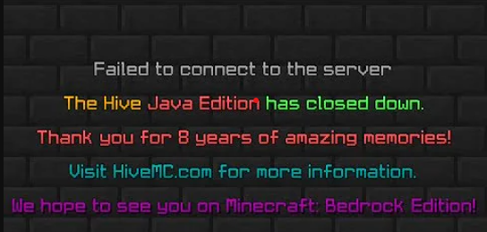

Ano vím HiveMC nebyl v TOP 7 nejstarších serverů ale má tu místo
Hive, také známý jako HiveMC, byl založen v únoru 2013
Bylo to vytvoření serverů The Herobrine a Trouble v Mineville, které se spojily do jednoho serveru
Zakladatelé byli Clankstar a JollyajaX
V současné době je HiveMC neboli The Hive na minecraft java verzi vypnutý ale na Bedrock verzi stále funguje
Dne 11 ledna 2021 tým HiveMC zveřejnili na svých fórech, kde píšou , že Java Edition server HiveMC bude vypnut 15 dubna 2021 kvůli nedostatku hráčů a omezeným zdrojům, jako jsou peníze použité na serveru Java Edition
Bylo uvedeno, že HiveMC použil více peněz na hostování 3 000 souběžných Java hráčů než 30 000 souběžných hráčů Bedrock
